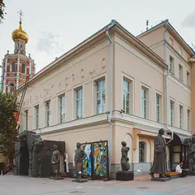

Спа · ЦАО
Тепло
Спа-пространство в центре с массажем на маслах по выбору гостя и кедровой бочкой. Хорошо, чтобы отогреться и расслабиться вдвоём или с подругой.
- ₽₽₽ · дороже 3 000 ₽ на человека
- Новое в каталоге
- в 2 планах
Позвать сюда: ТеплоОткрыть в каталоге: ТеплоМаршрут до места: Тепло
Адрес и детали
- Адрес
- ул. Петровка, 19, стр. 8
Открыть на Яндекс Картах (в новой вкладке) - Метро
- м. Чеховская
- Округ
- Центр (ЦАО)
- Цена
- дороже 3 000 ₽ на человека
- Проверено
- работает — проверили в ноябре 2026
Планы с этим местом 2

- ММОМА на Петровке · Музей современного искусства · м. Чеховская
- 5 минут пешкомТепло · Спа
- 2 минуты пешкомMiss you · Гранд-кафе
Выставка в ММОМА, в четырёх минутах спа с массажем для двоих, а затем долгий разговор за поздним обедом в гранд-кафе рядом.
Открыть план: Музей, спа и гранд-кафеПозвать сюда: Музей, спа и гранд-кафе
Фото: Inna vorobyova, CC BY-SA 4.0 · Wikimedia Commons
- Тепло · Спа · м. Чеховская
- 2 минуты пешкомL’Atelier Petrovka · Французский ресторан
Отогреться в кедровой бочке и после массажа неспешно дойти пару минут до французского ресторана на Петровке.
Открыть план: Кедровая бочка и ужинПозвать сюда: Кедровая бочка и ужин
Похожие рядом

Что ещё рядом
Как позвать
- Выбери план, место или событие — в карточке адрес, цены и маршрут в Яндекс Картах.
- Нажми «Позвать сюда» — соберётся приглашение-игра для свидания или голосование для компании.
- Отправь ссылку в любой мессенджер: тебе ответят, а компания отметит, куда и когда может. Бесплатно и без регистрации.